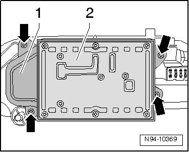
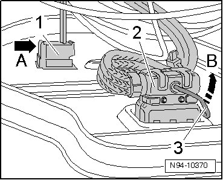
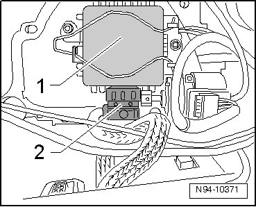
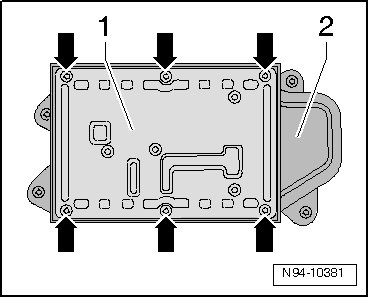

Hid Headlamp Control Module
HID Headlamps with Cornering Lamp, through 11.06
HID Headlamp Control Module
• Left High-intensity Gas Discharge Lamp Control Module (J343) and Right High-intensity Gas Discharge Lamp Control Module (J344) is not capable of On Board Diagnostic (OBD).
• Illustrations depict replacement of High-intensity Gas Discharge Lamp Control Module at left headlamp.
• Replacement of Left High-intensity Gas Discharge Lamp Control Module (J343) and of Right High-intensity Gas Discharge Lamp Control Module (J344) is performed analogously.
Removing
- Switch off ignition, switch off all electrical consumers and remove ignition key.
- Remove headlamp --> [ Headlamps, through 11.06 ] Headlamps, through 11.06.
- Remove mounting bolts - arrows - and pull off bracket - 1 - with HID lamp control module - 2 - as far as wire lengths allow from headlamp.

• High-intensity Gas Discharge Lamp Control Module - 2 - is not yet removed from bracket - 1 - to obtain better access to the harness connectors.
- Disengage retaining tab - arrow A - of harness connector - 1 - and disconnect harness connector - 1 -.

- Release retainer - 3 - on connector - 2 - in - direction of arrow B - and remove connector - 2 -.
- Disconnect the connector - 2 - from the HID lamp - 1 -.

- Remove bracket - 1 - with HID lamp control module and wire from headlamp.
- Unscrew mounting bolts - arrows - and remove High-intensity Gas Discharge Lamp Control Module - 1 - from bracket - 2 -.

Installing
Install in reverse order of removal, noting the following:
• Make sure seals are fitted correctly when installing bracket and installing High-intensity Gas Discharge Lamp Control Module. It is destroyed by ingress of water into headlamp.
- Check headlamp for function.
- Check and adjust headlamp aim if necessary.